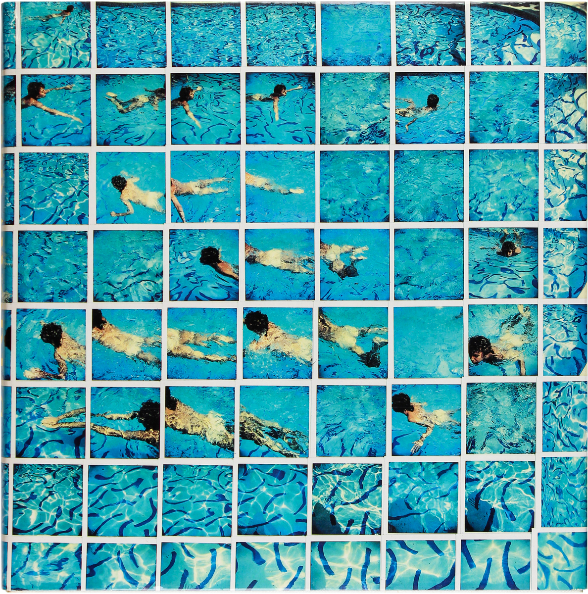
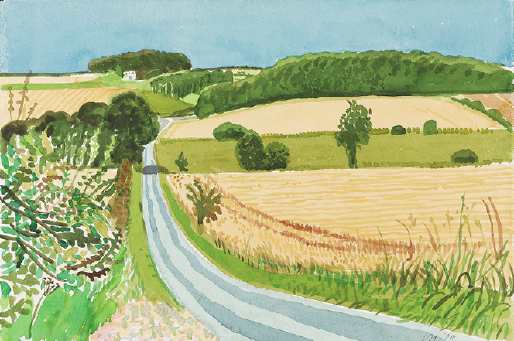

Works
Hockney has experimented with painting, drawing, printmaking, watercolours, photography, and many other media including a fax machine, paper pulp, computer applications and iPad drawing programs.[23] The subject matter of interest ranges from still life's to landscapes, portraits of friends, his dogs, and stage designs for the Royal Court Theatre, Glyndebourne, and the Metropolitan Opera in New York City.
Portraits
Hockney has always returned to painting portraits throughout his career. From 1968, and for the next few years, he painted portraits and double portraits of friends, lovers, and relatives just under life-size in a realistic style that adroitly captured the likenesses of his subjects.[24] Hockney has repeatedly been drawn to the same subjects – his family, employees, artists Mo McDermott and Maurice Payne, various writers he has known, fashion designers Celia Birtwell and Ossie Clark (Mr. and Mrs. Clark and Percy, 1970–71), curator Henry Geldzahler, art dealer Nicholas Wilder,[25] George Lawson and his ballet dancer lover, Wayne Sleep, and also his romantic interests throughout the years including Peter Schlesinger and Gregory Evans.[26] Perhaps more than all of these, Hockney has turned to his own figure year after year, creating over 300 self-portraits.[27]
From 1999 to 2001 Hockney used a camera lucida for his research into art history as well as his own work in the studio.[28][29] He created over 200 drawings of friends, family, and himself using this antique lens-based device.
In 2016, the Royal Academy exhibited Hockney's series entitled 82 Portraits and 1 Still-life which traveled to Ca' Pesaro in Venice, Italy, and the Guggenheim Museum Bilbao, in 2017 and to the Los Angeles County Museum of Art in 2018. Hockney calls the paintings started in 2013 "twenty-hour exposures" because each sitting took six to seven hours on three consecutive days.[30]
Printmaking
Hockney experimented with printmaking as early as a lithograph Self-Portrait in 1954 and worked in etchings during his time at RCA.[31] In 1965, the print workshop Gemini G.E.L. approached him to create a series of lithographs with a Los Angeles theme. Hockney responded by creating The Hollywood Collection, a series of lithographs recreating the art collection of a Hollywood star, each piece depicting an imagined work of art within a frame. Hockney went on to produce many other portfolios with Gemini G.E.L. including Friends, The Weather Series, and Some New Prints.[32] During the 1960s he produced several series of prints he thought of as 'graphic tales', including A Rake’s Progress (1961–63)[33] after Hogarth, Illustrations for Fourteen Poems from C.P. Cavafy (1966)[34] and Illustrations for Six Fairy Tales from the Brothers Grimm (1969).[35][31]
In 1973 Hockney began a fruitful collaboration with Aldo Crommelynck, Picasso's preferred printer. In his atelier, he adopted Crommelynck's trademark sugar lift, as well as a system of the master's own devising of imposing a wooden frame onto the plate to ensure color separation. Their early work together included Artist and Model (1973–74) and Contrejour in the French Style (1974).[31] In 1976 Hockney created a portfolio of 20 etchings at Crommelynck's atelier, The Blue Guitar: Etchings By David Hockney Who Was Inspired By Wallace Stevens Who Was Inspired By Pablo Picasso.[36] The etchings refer to themes in a poem by Wallace Stevens, "The Man with the Blue Guitar". It was published by Petersburg Press in October 1977. That year, Petersburg also published a book, in which the images were accompanied by the poem's text.[37]
In the summer of 1978, David Hockney stayed 6 weeks with his friend the printer Ken Tyler. Tyler invited Hockney to try a new technique with liquid paper. The process is painting with the paper itself, so the artist had to do it himself by hand. Each image becomes a unique work between printmaking and painting. In 6 weeks, Hockney created a total of 29 artworks with a series of 17 sunflowers and swimming pools.[38] Some of Hockney's other print portfolios include Home Made Prints (1986),[39] Recent Etchings (1998) and Moving Focus (1984–1986),[40] which contains lithographs related to A Walk Around the Hotel Courtyard, Acatlan. A retrospective of his prints, including 'computer drawings' printed on fax machines and inkjet printers, was exhibited at Dulwich Picture Gallery in London 5 February – 11 May 2014 and Bowes Museum, County Durham 7 June – 28 September 2014, with an accompanying publication Hockney, Printmaker by Richard Lloyd.[31]
Photocollages

In the early 1980s, Hockney began to produce photo collages—which in his early explorations within his personal photo albums he referred to as "joiners"[41]—first using Polaroid prints and subsequently 35mm, commercially processed colour prints. Using Polaroid snaps or photolab-prints of a single subject, Hockney arranged a patchwork to make a composite image.[42] Because the photographs are taken from different perspectives and at slightly different times, the result is work that has an affinity with Cubism, one of Hockney's major aims—discussing the way human vision works. Some pieces are landscapes, such as Pearblossom Highway #2,[2][43] others portraits, such as Kasmin 1982,[44] and My Mother, Bolton Abbey, 1982.[45] Creation of the "joiners" occurred accidentally. He noticed in the late sixties that photographers were using cameras with wide-angle lenses. He did not like these photographs because they looked somewhat distorted. While working on a painting of a living room and terrace in Los Angeles, he took Polaroid shots of the living room and glued them together, not intending for them to be a composition on their own. On looking at the final composition, he realised it created a narrative, as if the viewer moved through the room. He began to work more with photography after this discovery and stopped painting for a while to exclusively pursue this new technique. Over time, however, he discovered what he could not capture with a lens, saying: "Photography seems to be rather good at portraiture, or can be. But, it can't tell you about space, which is the essence of landscape. For me anyway. Even Ansel Adams can't quite prepare you for what Yosemite looks like when you go through that tunnel and you come out the other side."[46] Frustrated with the limitations of photography and its 'one-eyed' approach,[47] he returned to painting.
Other technology
In December 1985 Hockney used the Quantel Paintbox, a computer program that allowed the artist to sketch directly onto the screen. The resulting work was featured in a BBC series that profiled several artists. In 1999–2001, David's sister, Margaret, began experimenting with digital photography, scanning and computer printing, particularly making images of flowers scanning a small Japanese vase and fresh flowers.[48] In 2003, she was experimenting with Photoshop, scanning summer flowers and building up images in layers which Margaret printed out on an A3 printer.[49] In 2004, David went to stay with Margaret and she helped him scan his sketchbook of Yorkshire landscape and David soon began using a Wacom pad and pen directly into Photoshop.[50] Since 2009, Hockney has painted hundreds of portraits, still lifes and landscapes using the Brushes iPhone[51] and iPad[52] application, often sending them to his friends.[52] In 2010 and 2011, Hockney visited Yosemite National Park to draw its landscape on his iPad.[53] He used an iPad in designing a stained glass window at Westminster Abbey which celebrated the reign of Queen Elizabeth II. Unveiled in September 2018, the Queen's Window is located in the north transept of the Abbey and features a hawthorn blossom scene which is set in Yorkshire.[54]From 2010 to 2014, Hockney created multi-camera movies using three to eighteen cameras to record a single scene. He filmed the landscape of Yorkshire in various seasons, jugglers and dancers, and his own exhibitions within the de Young Museum and the Royal Academy of Arts.[55]Hockney's earlier photocollages influenced his shift to another medium, digital photography. He combined hundreds of photographs to create multi-viewpoint "photographic drawings" of groups of his friends in 2014.[56] Hockney picked the process back up in 2017, this time using the more advanced Agisoft PhotoScan photogrammetric software which allowed him to stitch together and rearrange thousands of photos. The resulting images were printed out as massive photomurals and were exhibited at Pace Gallery and LACMA in 2018.[57]
Plein air landscapes

Hockney returned more frequently to Yorkshire in the 1990s, usually every three months, to visit his mother[58] who died in 1999. He rarely stayed for more than two weeks until 1997,[58] when his friend Jonathan Silver who was terminally ill encouraged him to capture the local surroundings. He did this at first with paintings based on memory, some from his boyhood. In 1998, he completed the painting of the Yorkshire landmark, Garrowby Hill.[59] Hockney returned to Yorkshire for longer and longer stays, and by 2003 was painting the countryside en plein air in both oils and watercolor.[58] He set up residence and studio in a converted bed and breakfast, in the seaside town of Bridlington, about 75 mi (121 km) from where he was born.[60] The oil paintings he produced after 2005 were influenced by his intensive studies in watercolour, a series titled Midsummer: East Yorkshire (2003–2004).[61] He created paintings made of multiple smaller canvases—two to fifty—placed together. To help him visualize work at that scale, he used digital photographic reproductions to study the day's work.[58] In June 2007, Hockney's largest painting, Bigger Trees Near Warter or/ou Peinture sur le Motif pour le Nouvel Age Post-Photographique, which measures 15 by 40 feet (4.6 by 12.2 m), was hung in the Royal Academy's largest gallery in its annual Summer Exhibition.[62] This work "is a monumental-scale view of a coppice in Hockney's native Yorkshire, between Bridlington and York. It was painted on 50 individual canvases, mostly working in situ, over five weeks last winter."[63] In 2008, he donated it to Tate in London, saying: "I thought if I'm going to give something to the Tate I want to give them something really good. It's going to be here for a while. I don't want to give things I'm not too proud of... I thought this was a good painting because it's of England... it seems like a good thing to do."[64] The painting was the subject of a BBC1 Imagine film documentary by Bruno Wollheim called David Hockney: A Bigger Picture (2009) which followed Hockney as he worked outdoors over the preceding two years.[65]
Theatre works
Hockney's first stage designs were for Ubu Roi at London's Royal Court Theatre in 1966,[66] Stravinsky's The Rake's Progress at the Glyndebourne Festival Opera in England in 1975, and The Magic Flute for Glyndebourne in 1978.[67] In 1980, he agreed to design sets and costumes for a 20th-century French triple bill at the Metropolitan Opera House with the title Parade. The works were Parade, a ballet with music by Erik Satie; Les mamelles de Tirésias, an opera with libretto by Guillaume Apollinaire and music by Francis Poulenc, and L'enfant et les sortilèges, an opera with libretto by Colette and music by Maurice Ravel.[68] The reimagined set of L'enfant et les sortilèges from the 1983 exhibition Hockney Paints the Stage is a permanent installation at the Spalding House branch of the Honolulu Museum of Art. He designed sets for another triple bill of Stravinsky's Le sacre du printemps, Le rossignol, and Oedipus Rex for the Metropolitan Opera in 1981[69] as well as Richard Wagner's Tristan und Isolde for the Los Angeles Music Center Opera in 1987,[70] Puccini's Turandot in 1991 at the Chicago Lyric Opera, and Richard Strauss's Die Frau ohne Schatten in 1992 at the Royal Opera House in London.[67] In 1994, he designed costumes and scenery for twelve opera arias for the TV broadcast of Plácido Domingo's Operalia in Mexico City. Technical advances allowed him to become increasingly complex in model-making. At his studio he had a proscenium opening 6 feet (1.8 m) by 4 feet (1.2 m) in which he built sets in 1:8 scale. He also used a computerised setup that let him punch in and program lighting cues at will and synchronise them to a soundtrack of the music.[67] In 2017, Hockney was awarded the San Francisco Opera Medal on the occasion of the revival and restoration of his production for Turandot.[71]The majority of Hockney's theater works and stage design studies are found in the collection of The David Hockney Foundation.[72]
Personal Life
Hockney is gay[90] and has explored the nature of gay love in his portraiture. Sometimes, as in We Two Boys Together Clinging (1961), named after a poem by Walt Whitman, the works refer to his love for men. In 1963, he painted two men together in the painting Domestic Scene, Los Angeles, one showering while the other washes his back.[26] In summer 1966, while teaching at UCLA he met Peter Schlesinger, an art student who posed for paintings and drawings, and with whom he became romantically involved.[91] On the morning of 18 March 2013, Hockney's 23-year-old assistant, Dominic Elliott, died as a result of drinking drain cleaner at Hockney's Bridlington studio; he had also earlier drunk alcohol and taken cocaine, ecstasy and temazepam. Elliott was a first- and second-team player for Bridlington Rugby Club. It was reported that Hockney's partner drove Elliott to Scarborough General Hospital where he later died. The inquest returned a verdict of death by misadventure and Hockney was never implicated.[92][93][94] In November 2015 Hockney sold his house in Bridlington, a five-bedroomed former guest house, for £625,000, cutting all his remaining ties with the town.[95][96] He holds a California Medical Marijuana Verification Card, which enables him to buy cannabis for medical purposes. He has used hearing aids since 1979, but realised he was going deaf long before that.[97] He keeps fit by spending half an hour in the swimming pool each morning,[98] and can stand for six hours at the easel.[94] Hockney has synaesthetic associations between sound, colour and shape.[99]
Public Life
Like his father, Hockney was a conscientious objector, and worked as a medical orderly in hospitals during his National Service, 1957–1959.[119]Hockney was a founder of the Museum of Contemporary Art, Los Angeles, in 1979.[21] He serves on the advisory board of the political magazine Standpoint,[120] and contributed original sketches for its launch edition, in June 2008,[121] as well as agreeing to allow Standpoint to publish his previous views and pictures over the years.[122] He is a staunch pro-tobacco campaigner and was invited to guest-edit BBC Radio's Today programme on 29 December 2009 to air his views on the subject.[123] In October 2010, he and a hundred other artists signed an open letter to the Secretary of State for Culture, Media and Sport, Jeremy Hunt, protesting against cutbacks in the arts.[124]